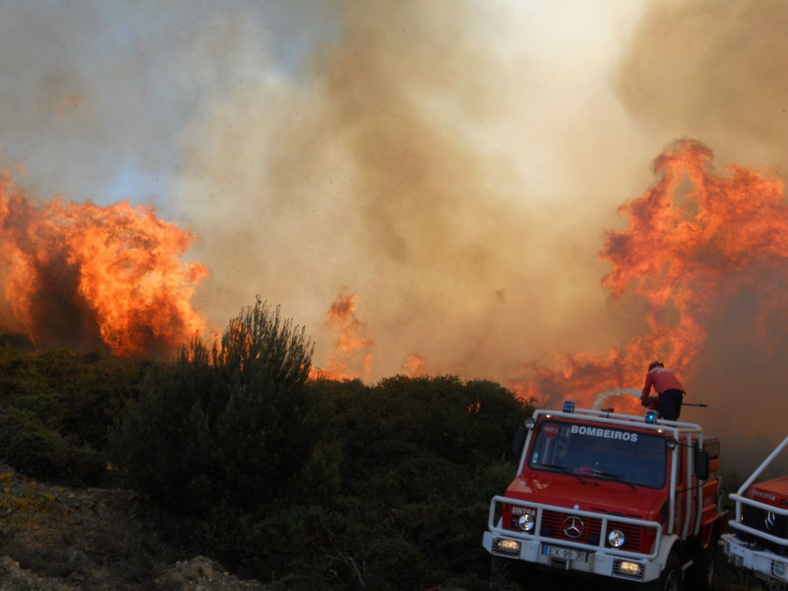
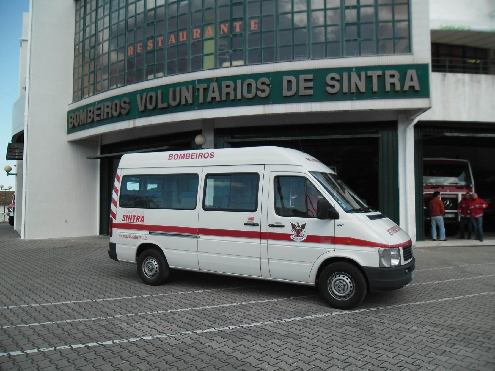
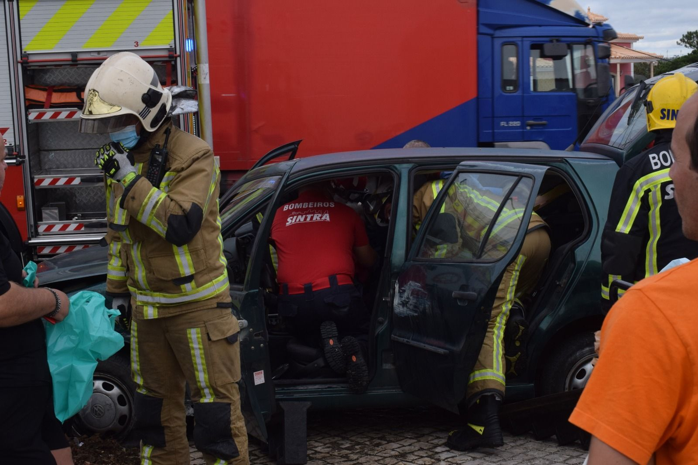
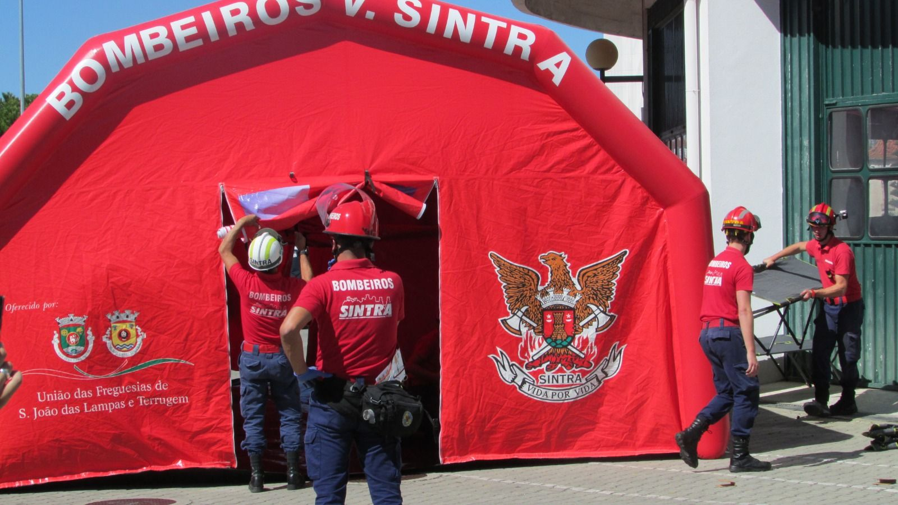
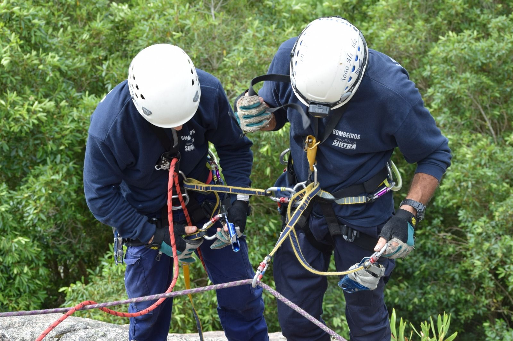
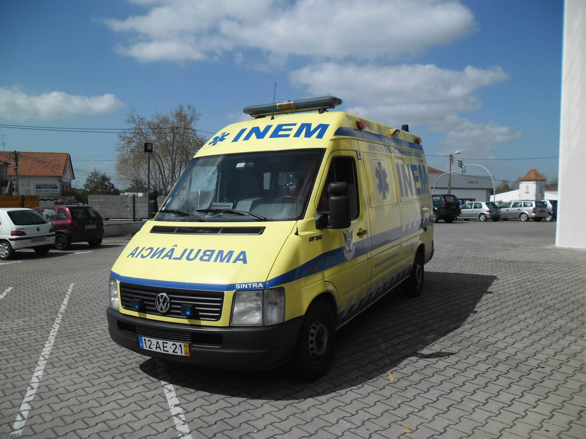
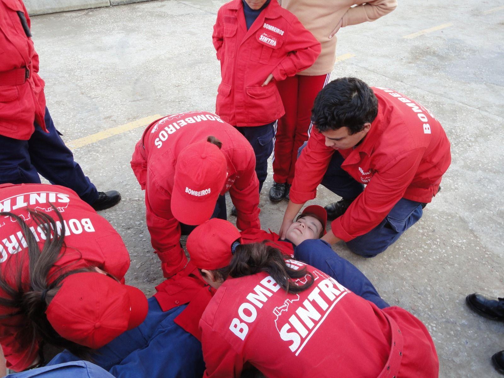
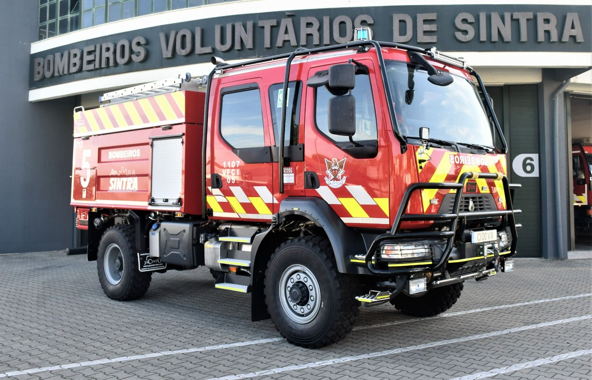
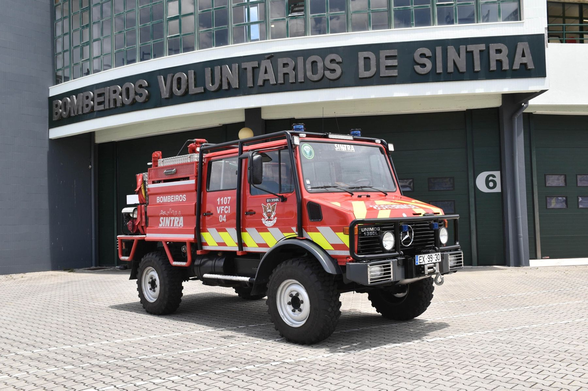
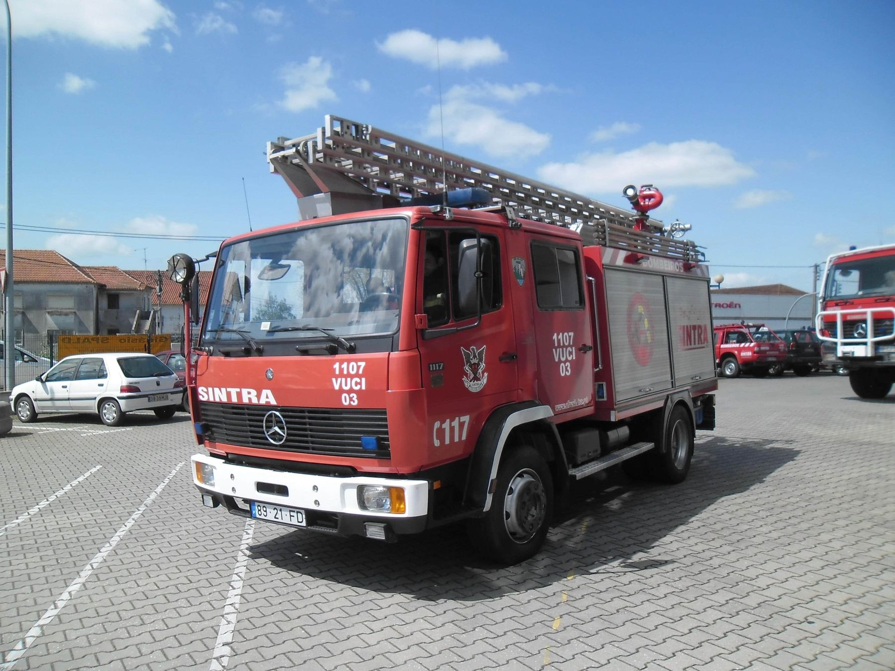

01Combate a incêndios
Prevenção e combate a incêndios urbanos, industriais e florestais ou rurais, incluindo a Serra de Sintra.
Prestamos diversos serviços à comunidade, sempre com dedicação e profissionalismo.

01Prevenção e combate a incêndios urbanos, industriais e florestais ou rurais, incluindo a Serra de Sintra.

02Assistência pré-hospitalar e transporte de doentes, urgente e não urgente.

03Resgate de vítimas em acidentes rodoviários e em locais de difícil acesso.

04Apoio à população em situações de emergência, cheias, tempestades e catástrofes.

05Equipas treinadas para resgates em escarpas, falésias e zonas de serra.
 06
06Serviços de apoio social e comunitário, prevenções e ações de formação.
Os Bombeiros Voluntários de Sintra apenas cobram os serviços considerados não urgentes e que não sejam requisitados pelas entidades competentes. Os sócios pagam menos 0,25 € por quilómetro.


Veículos de combate a incêndios, socorro a doentes, comando operacional, apoio logístico, transporte de pessoal e operações específicas.



Por 24 € por ano contribui diretamente para os meios de socorro de Sintra e tem descontos nos nossos serviços.